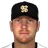
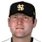
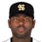
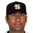
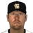

Franchise record book · ABL
Nashville Stars
Seasons covered: 2002–2002. Only games played for this franchise count.
This club has no pre-2002 history in the export, so its record book is the 2002 season to date. Rate records need 3.1 PA or 1 inning per team game.
Home runs
| # | Player | Season | Team | Home runs |
|---|---|---|---|---|
| #1 | Carlos Pena • | 2002 (ABL) |  Nashville Stars Nashville Stars | 11 |
| #2 |  Bobby Kielty • | 2002 (ABL) | Nashville Stars | 8 |
| #3 |  Russell Branyan • | 2002 (ABL) | Nashville Stars | 7 |
| #4 | Bobby Abreu • | 2002 (ABL) | Nashville Stars | 5 |
| #5 | Michael Tucker • | 2002 (ABL) | Nashville Stars | 5 |
| #6 | Aaron Guiel • | 2002 (ABL) | Nashville Stars | 4 |
| #7 | 2002 (ABL) | Nashville Stars | 3 | |
| #8 | Chris Gomez • | 2002 (ABL) | Nashville Stars | 3 |
| #9 |  Milton Bradley • | 2002 (ABL) | Nashville Stars | 3 |
| #10 | Jason Grabowski • | 2002 (ABL) | Nashville Stars | 1 |
Hits
| # | Player | Season | Team | Hits |
|---|---|---|---|---|
| #1 | Bobby Kielty • | 2002 (ABL) | Nashville Stars | 51 |
| #2 | Michael Tucker • | 2002 (ABL) | Nashville Stars | 48 |
| #3 | Milton Bradley • | 2002 (ABL) | Nashville Stars | 47 |
| #4 | Chris Gomez • | 2002 (ABL) | Nashville Stars | 46 |
| #5 | Carlos Pena • | 2002 (ABL) | Nashville Stars | 46 |
| #6 | Bobby Abreu • | 2002 (ABL) | Nashville Stars | 42 |
| #7 | Aaron Guiel • | 2002 (ABL) | Nashville Stars | 41 |
| #8 | Russell Branyan • | 2002 (ABL) | Nashville Stars | 40 |
| #9 | 2002 (ABL) | Nashville Stars | 30 | |
| #10 | Jason Grabowski • | 2002 (ABL) | Nashville Stars | 23 |
RBI
| # | Player | Season | Team | RBI |
|---|---|---|---|---|
| #1 | Bobby Kielty • | 2002 (ABL) | Nashville Stars | 29 |
| #2 | Aaron Guiel • | 2002 (ABL) | Nashville Stars | 28 |
| #3 | Carlos Pena • | 2002 (ABL) | Nashville Stars | 28 |
| #4 | Milton Bradley • | 2002 (ABL) | Nashville Stars | 28 |
| #5 | Bobby Abreu • | 2002 (ABL) | Nashville Stars | 23 |
| #6 | Russell Branyan • | 2002 (ABL) | Nashville Stars | 22 |
| #7 | Chris Gomez • | 2002 (ABL) | Nashville Stars | 19 |
| #8 | Michael Tucker • | 2002 (ABL) | Nashville Stars | 16 |
| #9 | 2002 (ABL) | Nashville Stars | 12 | |
| #10 | Jason Grabowski • | 2002 (ABL) | Nashville Stars | 11 |
Runs
| # | Player | Season | Team | Runs |
|---|---|---|---|---|
| #1 | Carlos Pena • | 2002 (ABL) | Nashville Stars | 34 |
| #2 | Michael Tucker • | 2002 (ABL) | Nashville Stars | 34 |
| #3 | Bobby Kielty • | 2002 (ABL) | Nashville Stars | 33 |
| #4 | Russell Branyan • | 2002 (ABL) | Nashville Stars | 23 |
| #5 | Milton Bradley • | 2002 (ABL) | Nashville Stars | 23 |
| #6 | Aaron Guiel • | 2002 (ABL) | Nashville Stars | 20 |
| #7 | Bobby Abreu • | 2002 (ABL) | Nashville Stars | 19 |
| #8 | Chris Gomez • | 2002 (ABL) | Nashville Stars | 17 |
| #9 | 2002 (ABL) | Nashville Stars | 12 | |
| #10 | Jason Grabowski • | 2002 (ABL) | Nashville Stars | 8 |
Stolen bases
| # | Player | Season | Team | Stolen bases |
|---|---|---|---|---|
| #1 | Milton Bradley • | 2002 (ABL) | Nashville Stars | 6 |
| #2 | Bobby Abreu • | 2002 (ABL) | Nashville Stars | 5 |
| #3 | Bobby Kielty • | 2002 (ABL) | Nashville Stars | 5 |
| #4 | Carlos Pena • | 2002 (ABL) | Nashville Stars | 5 |
| #5 | Michael Tucker • | 2002 (ABL) | Nashville Stars | 5 |
| #6 | Jason Grabowski • | 2002 (ABL) | Nashville Stars | 1 |
| #7 | 2002 (ABL) | Nashville Stars | 1 | |
| #8 | Chris Gomez • | 2002 (ABL) | Nashville Stars | 1 |
| #9 | 2002 (ABL) | Nashville Stars | 1 | |
| #10 | 2002 (ABL) | Nashville Stars | 0 |
Doubles
| # | Player | Season | Team | Doubles |
|---|---|---|---|---|
| #1 | Michael Tucker • | 2002 (ABL) | Nashville Stars | 13 |
| #2 | Milton Bradley • | 2002 (ABL) | Nashville Stars | 13 |
| #3 | Aaron Guiel • | 2002 (ABL) | Nashville Stars | 12 |
| #4 | Carlos Pena • | 2002 (ABL) | Nashville Stars | 12 |
| #5 | Jason Grabowski • | 2002 (ABL) | Nashville Stars | 10 |
| #6 | Bobby Kielty • | 2002 (ABL) | Nashville Stars | 10 |
| #7 | Bobby Abreu • | 2002 (ABL) | Nashville Stars | 8 |
| #8 | Chris Gomez • | 2002 (ABL) | Nashville Stars | 8 |
| #9 | Russell Branyan • | 2002 (ABL) | Nashville Stars | 6 |
| #10 | 2002 (ABL) | Nashville Stars | 3 |
Triples
| # | Player | Season | Team | Triples |
|---|---|---|---|---|
| #1 | Milton Bradley • | 2002 (ABL) | Nashville Stars | 2 |
| #2 | Jason Grabowski • | 2002 (ABL) | Nashville Stars | 1 |
| #3 | Chris Gomez • | 2002 (ABL) | Nashville Stars | 1 |
| #4 | 2002 (ABL) | Nashville Stars | 1 | |
| #5 | Bobby Kielty • | 2002 (ABL) | Nashville Stars | 1 |
| #6 | Aaron Guiel • | 2002 (ABL) | Nashville Stars | 1 |
| #7 | Russell Branyan • | 2002 (ABL) | Nashville Stars | 1 |
| #8 | Michael Tucker • | 2002 (ABL) | Nashville Stars | 1 |
| #9 | 2002 (ABL) | Nashville Stars | 0 | |
| #10 | Bobby Abreu • | 2002 (ABL) | Nashville Stars | 0 |
Walks
| # | Player | Season | Team | Walks |
|---|---|---|---|---|
| #1 | Michael Tucker • | 2002 (ABL) | Nashville Stars | 25 |
| #2 | Bobby Abreu • | 2002 (ABL) | Nashville Stars | 22 |
| #3 | Bobby Kielty • | 2002 (ABL) | Nashville Stars | 21 |
| #4 | Carlos Pena • | 2002 (ABL) | Nashville Stars | 20 |
| #5 | Russell Branyan • | 2002 (ABL) | Nashville Stars | 15 |
| #6 | Aaron Guiel • | 2002 (ABL) | Nashville Stars | 14 |
| #7 | Milton Bradley • | 2002 (ABL) | Nashville Stars | 11 |
| #8 | Jason Grabowski • | 2002 (ABL) | Nashville Stars | 6 |
| #9 | Chris Gomez • | 2002 (ABL) | Nashville Stars | 5 |
| #10 | 2002 (ABL) | Nashville Stars | 3 |
Total bases
| # | Player | Season | Team | Total bases |
|---|---|---|---|---|
| #1 | Carlos Pena • | 2002 (ABL) | Nashville Stars | 91 |
| #2 | Bobby Kielty • | 2002 (ABL) | Nashville Stars | 87 |
| #3 | Michael Tucker • | 2002 (ABL) | Nashville Stars | 78 |
| #4 | Milton Bradley • | 2002 (ABL) | Nashville Stars | 73 |
| #5 | Russell Branyan • | 2002 (ABL) | Nashville Stars | 69 |
| #6 | Aaron Guiel • | 2002 (ABL) | Nashville Stars | 67 |
| #7 | Bobby Abreu • | 2002 (ABL) | Nashville Stars | 65 |
| #8 | Chris Gomez • | 2002 (ABL) | Nashville Stars | 65 |
| #9 | 2002 (ABL) | Nashville Stars | 42 | |
| #10 | Jason Grabowski • | 2002 (ABL) | Nashville Stars | 38 |
Batting average qualified
| # | Player | Season | Team | Batting average |
|---|---|---|---|---|
| #1 | Chris Gomez • | 2002 (ABL) | Nashville Stars | .326 |
| #2 | Bobby Kielty • | 2002 (ABL) | Nashville Stars | .313 |
| #3 | Michael Tucker • | 2002 (ABL) | Nashville Stars | .308 |
| #4 | Milton Bradley • | 2002 (ABL) | Nashville Stars | .296 |
| #5 | Aaron Guiel • | 2002 (ABL) | Nashville Stars | .293 |
| #6 | Carlos Pena • | 2002 (ABL) | Nashville Stars | .284 |
| #7 | Bobby Abreu • | 2002 (ABL) | Nashville Stars | .284 |
| #8 | Russell Branyan • | 2002 (ABL) | Nashville Stars | .278 |
On-base % qualified
| # | Player | Season | Team | On-base % |
|---|---|---|---|---|
| #1 | Michael Tucker • | 2002 (ABL) | Nashville Stars | .404 |
| #2 | Bobby Kielty • | 2002 (ABL) | Nashville Stars | .401 |
| #3 | Bobby Abreu • | 2002 (ABL) | Nashville Stars | .376 |
| #4 | Carlos Pena • | 2002 (ABL) | Nashville Stars | .370 |
| #5 | Aaron Guiel • | 2002 (ABL) | Nashville Stars | .357 |
| #6 | Russell Branyan • | 2002 (ABL) | Nashville Stars | .350 |
| #7 | Chris Gomez • | 2002 (ABL) | Nashville Stars | .347 |
| #8 | Milton Bradley • | 2002 (ABL) | Nashville Stars | .341 |
Slugging % qualified
| # | Player | Season | Team | Slugging % |
|---|---|---|---|---|
| #1 | Carlos Pena • | 2002 (ABL) | Nashville Stars | .562 |
| #2 | Bobby Kielty • | 2002 (ABL) | Nashville Stars | .534 |
| #3 | Michael Tucker • | 2002 (ABL) | Nashville Stars | .500 |
| #4 | Russell Branyan • | 2002 (ABL) | Nashville Stars | .479 |
| #5 | Aaron Guiel • | 2002 (ABL) | Nashville Stars | .479 |
| #6 | Chris Gomez • | 2002 (ABL) | Nashville Stars | .461 |
| #7 | Milton Bradley • | 2002 (ABL) | Nashville Stars | .459 |
| #8 | Bobby Abreu • | 2002 (ABL) | Nashville Stars | .439 |
OPS qualified
| # | Player | Season | Team | OPS |
|---|---|---|---|---|
| #1 | Bobby Kielty • | 2002 (ABL) | Nashville Stars | .935 |
| #2 | Carlos Pena • | 2002 (ABL) | Nashville Stars | .931 |
| #3 | Michael Tucker • | 2002 (ABL) | Nashville Stars | .904 |
| #4 | Aaron Guiel • | 2002 (ABL) | Nashville Stars | .835 |
| #5 | Russell Branyan • | 2002 (ABL) | Nashville Stars | .829 |
| #6 | Bobby Abreu • | 2002 (ABL) | Nashville Stars | .816 |
| #7 | Chris Gomez • | 2002 (ABL) | Nashville Stars | .808 |
| #8 | Milton Bradley • | 2002 (ABL) | Nashville Stars | .800 |
WAR (OOTP)
| # | Player | Season | Team | WAR (OOTP) |
|---|---|---|---|---|
| #1 | Bobby Kielty • | 2002 (ABL) | Nashville Stars | 0.8 |
| #2 | Carlos Pena • | 2002 (ABL) | Nashville Stars | 0.7 |
| #3 | Michael Tucker • | 2002 (ABL) | Nashville Stars | 0.6 |
| #4 | Milton Bradley • | 2002 (ABL) | Nashville Stars | 0.6 |
| #5 | Russell Branyan • | 2002 (ABL) | Nashville Stars | 0.5 |
| #6 | Aaron Guiel • | 2002 (ABL) | Nashville Stars | 0.4 |
| #7 | 2002 (ABL) | Nashville Stars | 0.2 | |
| #8 | Chris Gomez • | 2002 (ABL) | Nashville Stars | 0.1 |
| #9 | Jason Grabowski • | 2002 (ABL) | Nashville Stars | 0.1 |
| #10 | 2002 (ABL) | Nashville Stars | 0.0 |
Wins
| # | Player | Season | Team | Wins |
|---|---|---|---|---|
| #1 |  Miguel Batista • | 2002 (ABL) | Nashville Stars | 3 |
| #2 | Russ Ortiz • | 2002 (ABL) | Nashville Stars | 3 |
| #3 | Lance Carter • | 2002 (ABL) | Nashville Stars | 2 |
| #4 | Tim Redding • | 2002 (ABL) | Nashville Stars | 2 |
| #5 | Matt Clement • | 2002 (ABL) | Nashville Stars | 1 |
| #6 | Scott Williamson • | 2002 (ABL) | Nashville Stars | 1 |
| #7 | Trey Hodges • | 2002 (ABL) | Nashville Stars | 1 |
| #8 | Rheal Cormier • | 2002 (ABL) | Nashville Stars | 1 |
| #9 | Francisco Campos • | 2002 (ABL) | Nashville Stars | 1 |
| #10 | Scott Randall • | 2002 (ABL) | Nashville Stars | 1 |
Strikeouts
| # | Player | Season | Team | Strikeouts |
|---|---|---|---|---|
| #1 | Matt Clement • | 2002 (ABL) | Nashville Stars | 55 |
| #2 | Miguel Batista • | 2002 (ABL) | Nashville Stars | 41 |
| #3 | Tim Redding • | 2002 (ABL) | Nashville Stars | 34 |
| #4 | Russ Ortiz • | 2002 (ABL) | Nashville Stars | 33 |
| #5 | Trey Hodges • | 2002 (ABL) | Nashville Stars | 30 |
| #6 |  Mike Trombley • | 2002 (ABL) | Nashville Stars | 22 |
| #7 | Scott Williamson • | 2002 (ABL) | Nashville Stars | 21 |
| #8 | Scott Randall • | 2002 (ABL) | Nashville Stars | 16 |
| #9 | Lance Carter • | 2002 (ABL) | Nashville Stars | 15 |
| #10 | Rheal Cormier • | 2002 (ABL) | Nashville Stars | 12 |
Saves
| # | Player | Season | Team | Saves |
|---|---|---|---|---|
| #1 | Scott Williamson • | 2002 (ABL) | Nashville Stars | 6 |
| #2 | Rheal Cormier • | 2002 (ABL) | Nashville Stars | 2 |
| #3 | Miguel Batista • | 2002 (ABL) | Nashville Stars | 0 |
| #4 | Matt Clement • | 2002 (ABL) | Nashville Stars | 0 |
| #5 | Lance Carter • | 2002 (ABL) | Nashville Stars | 0 |
| #6 | 2002 (ABL) | Nashville Stars | 0 | |
| #7 | Mike Trombley • | 2002 (ABL) | Nashville Stars | 0 |
| #8 | Trey Hodges • | 2002 (ABL) | Nashville Stars | 0 |
| #9 | Tim Redding • | 2002 (ABL) | Nashville Stars | 0 |
| #10 | Russ Ortiz • | 2002 (ABL) | Nashville Stars | 0 |
Innings
| # | Player | Season | Team | Innings |
|---|---|---|---|---|
| #1 | Matt Clement • | 2002 (ABL) | Nashville Stars | 52.1 |
| #2 | Miguel Batista • | 2002 (ABL) | Nashville Stars | 51.0 |
| #3 | Russ Ortiz • | 2002 (ABL) | Nashville Stars | 48.1 |
| #4 | Tim Redding • | 2002 (ABL) | Nashville Stars | 40.1 |
| #5 | Trey Hodges • | 2002 (ABL) | Nashville Stars | 36.0 |
| #6 | Scott Randall • | 2002 (ABL) | Nashville Stars | 26.1 |
| #7 | Francisco Campos • | 2002 (ABL) | Nashville Stars | 22.1 |
| #8 | Lance Carter • | 2002 (ABL) | Nashville Stars | 19.0 |
| #9 | Mike Trombley • | 2002 (ABL) | Nashville Stars | 19.0 |
| #10 | Scott Williamson • | 2002 (ABL) | Nashville Stars | 15.1 |
Complete games
| # | Player | Season | Team | Complete games |
|---|---|---|---|---|
| #1 | Miguel Batista • | 2002 (ABL) | Nashville Stars | 1 |
| #2 | Matt Clement • | 2002 (ABL) | Nashville Stars | 1 |
| #3 | Lance Carter • | 2002 (ABL) | Nashville Stars | 0 |
| #4 | 2002 (ABL) | Nashville Stars | 0 | |
| #5 | Scott Williamson • | 2002 (ABL) | Nashville Stars | 0 |
| #6 | Mike Trombley • | 2002 (ABL) | Nashville Stars | 0 |
| #7 | Trey Hodges • | 2002 (ABL) | Nashville Stars | 0 |
| #8 | Rheal Cormier • | 2002 (ABL) | Nashville Stars | 0 |
| #9 | Tim Redding • | 2002 (ABL) | Nashville Stars | 0 |
| #10 | Russ Ortiz • | 2002 (ABL) | Nashville Stars | 0 |
Shutouts
| # | Player | Season | Team | Shutouts |
|---|---|---|---|---|
| #1 | Miguel Batista • | 2002 (ABL) | Nashville Stars | 0 |
| #2 | Matt Clement • | 2002 (ABL) | Nashville Stars | 0 |
| #3 | Lance Carter • | 2002 (ABL) | Nashville Stars | 0 |
| #4 | 2002 (ABL) | Nashville Stars | 0 | |
| #5 | Scott Williamson • | 2002 (ABL) | Nashville Stars | 0 |
| #6 | Mike Trombley • | 2002 (ABL) | Nashville Stars | 0 |
| #7 | Trey Hodges • | 2002 (ABL) | Nashville Stars | 0 |
| #8 | Rheal Cormier • | 2002 (ABL) | Nashville Stars | 0 |
| #9 | Tim Redding • | 2002 (ABL) | Nashville Stars | 0 |
| #10 | Russ Ortiz • | 2002 (ABL) | Nashville Stars | 0 |
ERA qualified
| # | Player | Season | Team | ERA |
|---|---|---|---|---|
| #1 | Miguel Batista • | 2002 (ABL) | Nashville Stars | 3.00 |
| #2 | Russ Ortiz • | 2002 (ABL) | Nashville Stars | 6.52 |
| #3 | Matt Clement • | 2002 (ABL) | Nashville Stars | 6.71 |
WHIP qualified
| # | Player | Season | Team | WHIP |
|---|---|---|---|---|
| #1 | Miguel Batista • | 2002 (ABL) | Nashville Stars | 1.35 |
| #2 | Russ Ortiz • | 2002 (ABL) | Nashville Stars | 1.80 |
| #3 | Matt Clement • | 2002 (ABL) | Nashville Stars | 1.83 |
K/9 qualified
| # | Player | Season | Team | K/9 |
|---|---|---|---|---|
| #1 | Matt Clement • | 2002 (ABL) | Nashville Stars | 9.5 |
| #2 | Miguel Batista • | 2002 (ABL) | Nashville Stars | 7.2 |
| #3 | Russ Ortiz • | 2002 (ABL) | Nashville Stars | 6.1 |
WAR (OOTP)
| # | Player | Season | Team | WAR (OOTP) |
|---|---|---|---|---|
| #1 | Miguel Batista • | 2002 (ABL) | Nashville Stars | 1.2 |
| #2 | Matt Clement • | 2002 (ABL) | Nashville Stars | 1.1 |
| #3 | Rheal Cormier • | 2002 (ABL) | Nashville Stars | 0.5 |
| #4 | Lance Carter • | 2002 (ABL) | Nashville Stars | 0.4 |
| #5 | Mike Trombley • | 2002 (ABL) | Nashville Stars | 0.4 |
| #6 | Tim Redding • | 2002 (ABL) | Nashville Stars | 0.4 |
| #7 | Scott Williamson • | 2002 (ABL) | Nashville Stars | 0.2 |
| #8 | Trey Hodges • | 2002 (ABL) | Nashville Stars | 0.2 |
| #9 | Russ Ortiz • | 2002 (ABL) | Nashville Stars | 0.2 |
| #10 | 2002 (ABL) | Nashville Stars | 0.1 |
Home runs
| # | Player | Years | Home runs |
|---|---|---|---|
| #1 | Carlos Pena • | 2001–02 | 11 |
| #2 | Bobby Kielty • | 2001–02 | 8 |
| #3 | Russell Branyan • | 1998–02 | 7 |
| #4 | Bobby Abreu • | 1996–02 | 5 |
| #5 | Michael Tucker • | 1995–02 | 5 |
| #6 | Aaron Guiel • | 2002–02 | 4 |
| #7 | 1994–02 | 3 | |
| #8 | Chris Gomez • | 1993–02 | 3 |
| #9 | Milton Bradley • | 2000–02 | 3 |
| #10 | Jason Grabowski • | 2002–02 | 1 |
Hits
| # | Player | Years | Hits |
|---|---|---|---|
| #1 | Bobby Kielty • | 2001–02 | 51 |
| #2 | Michael Tucker • | 1995–02 | 48 |
| #3 | Milton Bradley • | 2000–02 | 47 |
| #4 | Chris Gomez • | 1993–02 | 46 |
| #5 | Carlos Pena • | 2001–02 | 46 |
| #6 | Bobby Abreu • | 1996–02 | 42 |
| #7 | Aaron Guiel • | 2002–02 | 41 |
| #8 | Russell Branyan • | 1998–02 | 40 |
| #9 | 1994–02 | 30 | |
| #10 | Jason Grabowski • | 2002–02 | 23 |
RBI
| # | Player | Years | RBI |
|---|---|---|---|
| #1 | Bobby Kielty • | 2001–02 | 29 |
| #2 | Aaron Guiel • | 2002–02 | 28 |
| #3 | Carlos Pena • | 2001–02 | 28 |
| #4 | Milton Bradley • | 2000–02 | 28 |
| #5 | Bobby Abreu • | 1996–02 | 23 |
| #6 | Russell Branyan • | 1998–02 | 22 |
| #7 | Chris Gomez • | 1993–02 | 19 |
| #8 | Michael Tucker • | 1995–02 | 16 |
| #9 | 1994–02 | 12 | |
| #10 | Jason Grabowski • | 2002–02 | 11 |
Runs
| # | Player | Years | Runs |
|---|---|---|---|
| #1 | Carlos Pena • | 2001–02 | 34 |
| #2 | Michael Tucker • | 1995–02 | 34 |
| #3 | Bobby Kielty • | 2001–02 | 33 |
| #4 | Russell Branyan • | 1998–02 | 23 |
| #5 | Milton Bradley • | 2000–02 | 23 |
| #6 | Aaron Guiel • | 2002–02 | 20 |
| #7 | Bobby Abreu • | 1996–02 | 19 |
| #8 | Chris Gomez • | 1993–02 | 17 |
| #9 | 1994–02 | 12 | |
| #10 | Jason Grabowski • | 2002–02 | 8 |
Stolen bases
| # | Player | Years | Stolen bases |
|---|---|---|---|
| #1 | Milton Bradley • | 2000–02 | 6 |
| #2 | Bobby Abreu • | 1996–02 | 5 |
| #3 | Bobby Kielty • | 2001–02 | 5 |
| #4 | Carlos Pena • | 2001–02 | 5 |
| #5 | Michael Tucker • | 1995–02 | 5 |
| #6 | Jason Grabowski • | 2002–02 | 1 |
| #7 | 2001–02 | 1 | |
| #8 | Chris Gomez • | 1993–02 | 1 |
| #9 | 1998–02 | 1 | |
| #10 | 1994–02 | 0 |
Doubles
| # | Player | Years | Doubles |
|---|---|---|---|
| #1 | Michael Tucker • | 1995–02 | 13 |
| #2 | Milton Bradley • | 2000–02 | 13 |
| #3 | Aaron Guiel • | 2002–02 | 12 |
| #4 | Carlos Pena • | 2001–02 | 12 |
| #5 | Jason Grabowski • | 2002–02 | 10 |
| #6 | Bobby Kielty • | 2001–02 | 10 |
| #7 | Bobby Abreu • | 1996–02 | 8 |
| #8 | Chris Gomez • | 1993–02 | 8 |
| #9 | Russell Branyan • | 1998–02 | 6 |
| #10 | 1994–02 | 3 |
Triples
| # | Player | Years | Triples |
|---|---|---|---|
| #1 | Milton Bradley • | 2000–02 | 2 |
| #2 | Jason Grabowski • | 2002–02 | 1 |
| #3 | Chris Gomez • | 1993–02 | 1 |
| #4 | 2001–02 | 1 | |
| #5 | Bobby Kielty • | 2001–02 | 1 |
| #6 | Aaron Guiel • | 2002–02 | 1 |
| #7 | Russell Branyan • | 1998–02 | 1 |
| #8 | Michael Tucker • | 1995–02 | 1 |
| #9 | 2001–02 | 0 | |
| #10 | Bobby Abreu • | 1996–02 | 0 |
Walks
| # | Player | Years | Walks |
|---|---|---|---|
| #1 | Michael Tucker • | 1995–02 | 25 |
| #2 | Bobby Abreu • | 1996–02 | 22 |
| #3 | Bobby Kielty • | 2001–02 | 21 |
| #4 | Carlos Pena • | 2001–02 | 20 |
| #5 | Russell Branyan • | 1998–02 | 15 |
| #6 | Aaron Guiel • | 2002–02 | 14 |
| #7 | Milton Bradley • | 2000–02 | 11 |
| #8 | Jason Grabowski • | 2002–02 | 6 |
| #9 | Chris Gomez • | 1993–02 | 5 |
| #10 | 2001–02 | 3 |
Total bases
| # | Player | Years | Total bases |
|---|---|---|---|
| #1 | Carlos Pena • | 2001–02 | 91 |
| #2 | Bobby Kielty • | 2001–02 | 87 |
| #3 | Michael Tucker • | 1995–02 | 78 |
| #4 | Milton Bradley • | 2000–02 | 73 |
| #5 | Russell Branyan • | 1998–02 | 69 |
| #6 | Aaron Guiel • | 2002–02 | 67 |
| #7 | Bobby Abreu • | 1996–02 | 65 |
| #8 | Chris Gomez • | 1993–02 | 65 |
| #9 | 1994–02 | 42 | |
| #10 | Jason Grabowski • | 2002–02 | 38 |
Batting average min 2,000 PA
| # | Player | Years | Batting average |
|---|
On-base % min 2,000 PA
| # | Player | Years | On-base % |
|---|
Slugging % min 2,000 PA
| # | Player | Years | Slugging % |
|---|
OPS min 2,000 PA
| # | Player | Years | OPS |
|---|
WAR (OOTP)
| # | Player | Years | WAR (OOTP) |
|---|---|---|---|
| #1 | Bobby Kielty • | 2001–02 | 0.8 |
| #2 | Carlos Pena • | 2001–02 | 0.7 |
| #3 | Michael Tucker • | 1995–02 | 0.6 |
| #4 | Milton Bradley • | 2000–02 | 0.6 |
| #5 | Russell Branyan • | 1998–02 | 0.5 |
| #6 | Aaron Guiel • | 2002–02 | 0.4 |
| #7 | 2001–02 | 0.2 | |
| #8 | Chris Gomez • | 1993–02 | 0.1 |
| #9 | Jason Grabowski • | 2002–02 | 0.1 |
| #10 | 2001–02 | 0.0 |
Wins
| # | Player | Years | Wins |
|---|---|---|---|
| #1 | Miguel Batista • | 1992–02 | 3 |
| #2 | Russ Ortiz • | 1998–02 | 3 |
| #3 | Lance Carter • | 1999–02 | 2 |
| #4 | Tim Redding • | 2001–02 | 2 |
| #5 | Matt Clement • | 1998–02 | 1 |
| #6 | Scott Williamson • | 1999–02 | 1 |
| #7 | Trey Hodges • | 2002–02 | 1 |
| #8 | Rheal Cormier • | 1991–02 | 1 |
| #9 | Francisco Campos • | 1999–02 | 1 |
| #10 | Scott Randall • | 2002–02 | 1 |
Strikeouts
| # | Player | Years | Strikeouts |
|---|---|---|---|
| #1 | Matt Clement • | 1998–02 | 55 |
| #2 | Miguel Batista • | 1992–02 | 41 |
| #3 | Tim Redding • | 2001–02 | 34 |
| #4 | Russ Ortiz • | 1998–02 | 33 |
| #5 | Trey Hodges • | 2002–02 | 30 |
| #6 | Mike Trombley • | 1992–02 | 22 |
| #7 | Scott Williamson • | 1999–02 | 21 |
| #8 | Scott Randall • | 2002–02 | 16 |
| #9 | Lance Carter • | 1999–02 | 15 |
| #10 | Rheal Cormier • | 1991–02 | 12 |
Saves
| # | Player | Years | Saves |
|---|---|---|---|
| #1 | Scott Williamson • | 1999–02 | 6 |
| #2 | Rheal Cormier • | 1991–02 | 2 |
| #3 | Miguel Batista • | 1992–02 | 0 |
| #4 | Matt Clement • | 1998–02 | 0 |
| #5 | Lance Carter • | 1999–02 | 0 |
| #6 | 1996–02 | 0 | |
| #7 | Mike Trombley • | 1992–02 | 0 |
| #8 | Trey Hodges • | 2002–02 | 0 |
| #9 | Tim Redding • | 2001–02 | 0 |
| #10 | Russ Ortiz • | 1998–02 | 0 |
Innings
| # | Player | Years | Innings |
|---|---|---|---|
| #1 | Matt Clement • | 1998–02 | 52.1 |
| #2 | Miguel Batista • | 1992–02 | 51.0 |
| #3 | Russ Ortiz • | 1998–02 | 48.1 |
| #4 | Tim Redding • | 2001–02 | 40.1 |
| #5 | Trey Hodges • | 2002–02 | 36.0 |
| #6 | Scott Randall • | 2002–02 | 26.1 |
| #7 | Francisco Campos • | 1999–02 | 22.1 |
| #8 | Lance Carter • | 1999–02 | 19.0 |
| #9 | Mike Trombley • | 1992–02 | 19.0 |
| #10 | Scott Williamson • | 1999–02 | 15.1 |
Complete games
| # | Player | Years | Complete games |
|---|---|---|---|
| #1 | Miguel Batista • | 1992–02 | 1 |
| #2 | Matt Clement • | 1998–02 | 1 |
| #3 | Lance Carter • | 1999–02 | 0 |
| #4 | 1996–02 | 0 | |
| #5 | Scott Williamson • | 1999–02 | 0 |
| #6 | Mike Trombley • | 1992–02 | 0 |
| #7 | Trey Hodges • | 2002–02 | 0 |
| #8 | Rheal Cormier • | 1991–02 | 0 |
| #9 | Tim Redding • | 2001–02 | 0 |
| #10 | Russ Ortiz • | 1998–02 | 0 |
Shutouts
| # | Player | Years | Shutouts |
|---|---|---|---|
| #1 | Miguel Batista • | 1992–02 | 0 |
| #2 | Matt Clement • | 1998–02 | 0 |
| #3 | Lance Carter • | 1999–02 | 0 |
| #4 | 1996–02 | 0 | |
| #5 | Scott Williamson • | 1999–02 | 0 |
| #6 | Mike Trombley • | 1992–02 | 0 |
| #7 | Trey Hodges • | 2002–02 | 0 |
| #8 | Rheal Cormier • | 1991–02 | 0 |
| #9 | Tim Redding • | 2001–02 | 0 |
| #10 | Russ Ortiz • | 1998–02 | 0 |
ERA min 500 IP
| # | Player | Years | ERA |
|---|
WHIP min 500 IP
| # | Player | Years | WHIP |
|---|
K/9 min 500 IP
| # | Player | Years | K/9 |
|---|
WAR (OOTP)
| # | Player | Years | WAR (OOTP) |
|---|---|---|---|
| #1 | Miguel Batista • | 1992–02 | 1.2 |
| #2 | Matt Clement • | 1998–02 | 1.1 |
| #3 | Rheal Cormier • | 1991–02 | 0.5 |
| #4 | Lance Carter • | 1999–02 | 0.4 |
| #5 | Mike Trombley • | 1992–02 | 0.4 |
| #6 | Tim Redding • | 2001–02 | 0.4 |
| #7 | Scott Williamson • | 1999–02 | 0.2 |
| #8 | Trey Hodges • | 2002–02 | 0.2 |
| #9 | Russ Ortiz • | 1998–02 | 0.2 |
| #10 | 1996–02 | 0.1 |